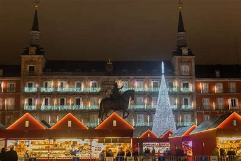

La Navidad en la Plaza Mayor de Madrid es un espectáculo vibrante y acogedor. Durante esta época, la plaza se llena de coloridos mercadillos, donde se pueden encontrar adornos navideños, figuritas para los belenes y deliciosos dulces típicos. Las luces brillan sobre los edificios históricos, creando un ambiente mágico, mientras familias y turistas disfrutan de un chocolate caliente o un churro en las terrazas. Además, la gran figura del árbol de Navidad y la tradicional Lotería de Navidad añaden un toque festivo, convirtiendo la plaza en un punto de encuentro imprescindible durante las celebraciones.
Plaza mayor

Puerta del Sol
En Navidad, la Puerta del Sol de Madrid se transforma en un centro de actividades festivas. Entre las atracciones destacan el gigantesco árbol de Navidad y la famosa figura del Oso y el Madroño, decorados con luces. Se organizan conciertos, espectáculos y eventos culturales, mientras que los mercadillos ofrecen productos típicos como dulces navideños y artesanías. Además, la tradición de las campanadas para dar la bienvenida al Año Nuevo atrae a multitudes, creando un ambiente de celebración y alegría.
Real Jardín botánico

En Navidad, el Jardín Botánico de Madrid se convierte en un oasis de paz y belleza. Aunque los jardines pueden estar menos floridos, la tranquilidad del lugar invita a paseos contemplativos entre sus caminos. Durante esta época, se suelen organizar actividades especiales, como talleres y visitas guiadas, que resaltan la conexión de la naturaleza con las festividades. Además, las luces navideñas añaden un toque mágico, creando un ambiente sereno ideal para disfrutar de la naturaleza en pleno invierno.
Parque de las Mágicas Navidades de Torrejón
En el Parque de las Mágicas Navidades de Torrejón de Ardoz, los visitantes pueden disfrutar de un espectacular espectáculo de luces y decoración navideña. El parque presenta un impresionante árbol de Navidad, un mercado navideño con productos típicos y atracciones para toda la familia. También hay actividades interactivas, espectáculos de música y danza, y personajes navideños que alegran el ambiente. Todo ello crea una experiencia mágica, ideal para disfrutar de la temporada festiva en un entorno familiar y acogedor.